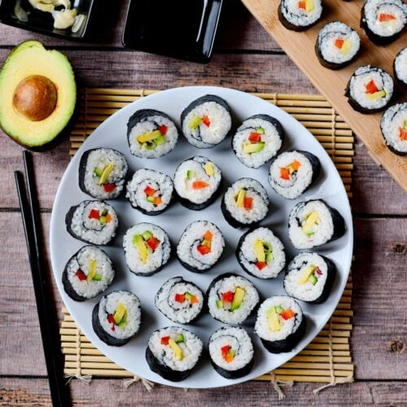
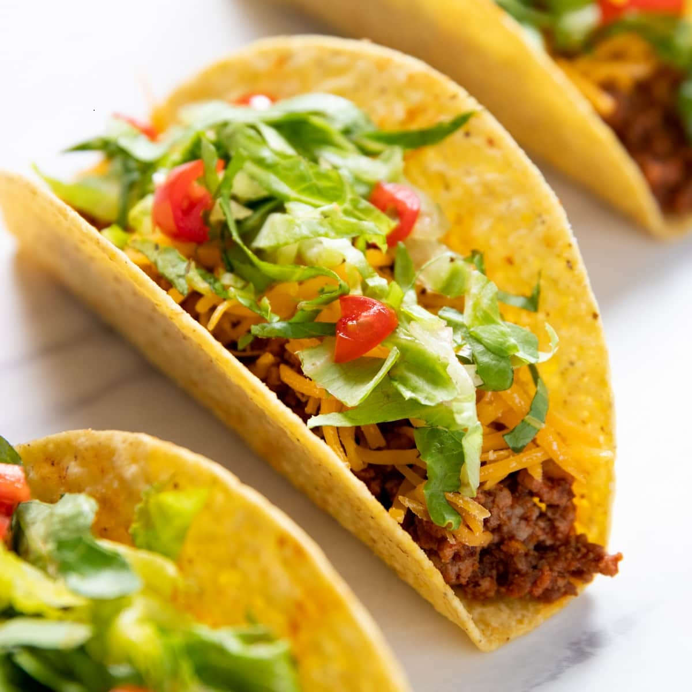
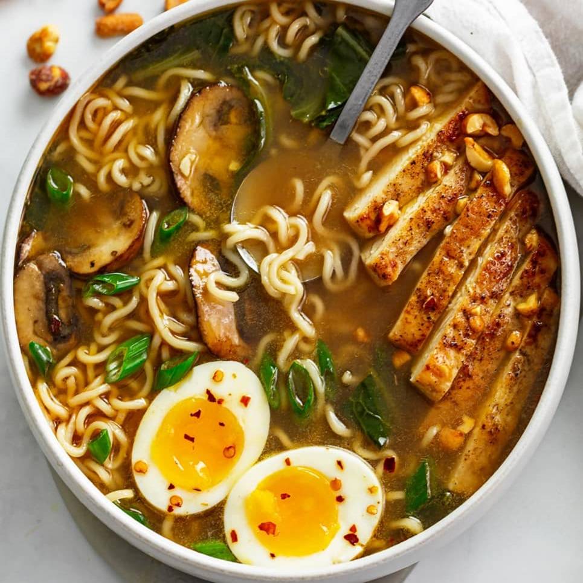

Burger
A sandwich consisting of one or more cooked patties of ground meat, usually beef,
placed inside a sliced bread roll or bun. Common toppings include lettuce, tomato, cheese, pickles, and
condiments like ketchup or mustard.

Pizza
A classic Italian dish made with a round, flat base of dough topped with tomato
sauce, cheese, and various toppings such as pepperoni, vegetables, or seafood.

Pasta
A traditional Italian dish that includes a variety of noodles served with different
types of sauces such as marinara, Alfredo, or pesto. Popular types of pasta include spaghetti,
fettuccine, and penne.

Sushi
A Japanese dish featuring vinegared rice combined with various ingredients such as
raw fish, vegetables, and sometimes tropical fruits. Sushi is often served with soy sauce, wasabi, and
pickled ginger.

Taco
A traditional Mexican dish consisting of a folded or rolled tortilla filled with a
variety of ingredients such as seasoned meat (beef, chicken, pork), beans, cheese, lettuce, and salsa.

Ramen
A Japanese noodle soup with a flavorful broth, tender noodles, and various toppings like pork, egg, and vegetables.